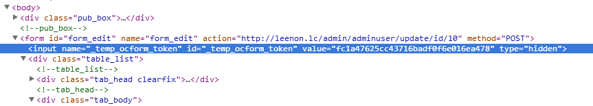
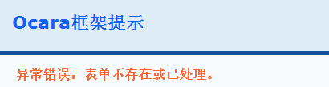

表单令牌
1、什么是表单令牌
为了防止XSS攻击，或者防止表单重复提交造成重复数据添加或更新，所以为每个表单设置一个唯一的ID标识，即表单令牌.
表单令牌有存活期限制。
当表单提交后后台处理成功，会结束存活期。这样，如果用户在提交后的页面任意刷新或返回上一页进行再次提交，都会提示表单不存在，防止重复提交问题。
如果表单令牌不对，会提示表单来源非法，防止XSS攻击。
但当后台处理失败，不会结束存活期，可以重新返回提交。
2、表单令牌的保存
表单令牌是加密的，保存在session当中，并且在<form>标签后面有一个隐藏域，用来存放该表单令牌。
如下截图中蓝底的input标签：

3、表单令牌验证
表单提交之后，框架会首先检测该表单令牌是否存在，如果不存在会提示表单不存在或已过期。如下截图：

然后，会将表单令牌与session中保存的对应令牌进行比较，如果不一致，则会提示表单来源非法。如下截图所示：
 4、如何使用表单令牌
（1）自定义表单令牌隐藏域名称
表单令牌隐藏域名称默认为_oc_temp_ocform_token，其中的“_oc_”是自动加上的。
默认设置是在required/conf/develop.php文件的$CONF['FORM']['token_tag']。
如下所示：
4、如何使用表单令牌
（1）自定义表单令牌隐藏域名称
表单令牌隐藏域名称默认为_oc_temp_ocform_token，其中的“_oc_”是自动加上的。
默认设置是在required/conf/develop.php文件的$CONF['FORM']['token_tag']。
如下所示：
/*
/*
* 表单配置
*/
$CONF['FORM'] = array(
'token_tag' => 'temp_ocform_token', //表单令牌隐藏域名称
'use_field' => 0, //使用数据表字段，表单中默认使用表字段描述
);
注：配置时不需要加上“_oc_”前缀，框架会自动加上。
（2）自定义表单令牌的加密算法
框架对表单令牌的加密一般是md5()函数加密的，其中必须包括当前路由和随机数，否则会出现验证问题。
如果框架的加密算法不满足需求，可以自定义自己的加密算法，使用自定义回调即可。
默认设置是在required/conf/callback.php文件的$CONF['CALLBACK']['form']['generate_token']。
比如假设使用iform控制器的gentoken动作来生成表单令牌，则配置如下：
/*
/*
* 表单使用回调
*/
$CONF['CALLBACK']['form'] = array(
'check_error' => '', //表单检测失败时的回调
'generate_token' => '/iform/gentoken', //表单令牌加密算法的回调
);
注：配置时不需要加上“_oc_”前缀，框架会自动加上。
（3） 如何手动控制表单令牌的过期?
框架默认是在action类的_submit()方法执行以后，删除当前表单令牌，让表单令牌过期。
如果想在此之前手动过期，就使用控制器动作的formToken来清除表单令牌，该方法返回表单令牌类对象，使用它的clear()清除即可。
代码实例如下：
class AddAction extends ItemController
{
protected function _action(){}
protected function _submit()
{
//处理掉提交的数据
$this->model()->data()->save();
//手动清除表单令牌
$this->formToken->clearToken();
//停止代码前最好加上这句，如果使用setAfter()方法设置过了执行后续程序的话
$this->after();
//停止代码执行，就不会调用框架中的表单令牌clearToken()操作
ocDie();
}
}
（4）如何取消表单令牌验证？（仅用于开发测试）
如果想取消表单令牌是否合法的验证，只要使用在新建表单的时候使用validateToken()方法即可，传递参数false。
注：表单令牌验证是防止XSS攻击，所以只建议在代码开发测试时取消。
如下实例：
class AddAction extends ItemController
{
protected function _action(){}
protected function _form()
{
$url = ocUrl($this->getRoute());
$this->form('form_add')
->init($url)
->validateToken(false)
->model('\Model\Item');
}
}
5、跨页表单
表单令牌标识Key一般都是“控制器动作路由+表单+随机数”组成的，默认的控制器动作为当前Action。
如果其中的控制器路由字符串不同，具体表现为表单提交前后的控制器动作不同，就会导致提交前后的表单令牌不一致，从而出现过期错误。
这种情况的表单称为跨页表单，它的表单生成方法，参见跨页表单生成一节。
6、自定义表单非法或过期的错误页面
上述截图的表单非法提示页面，是框架默认的，然而直接显示Ocara提示，对我们的代码也没有安全保障，也不友好。
所以我们可以自定义错误提示的页面。具体步骤如下：
（1）新建错误页面
其实就是新建一个Action去显示。
（2）配置自定义回调
新建好了错误提示的页面后，然后配置自定义回调。
配置选项resourcde/conf/callback.php中的$CONF['CALLBACK']['form']['check_error']。
该配置是用来设置是否验证表单，包括表单令牌验证和字段格式验证两种验证出错时的回调，所以请慎重设置。
如下所示实例：
/*
* 表单使用回调
*/
$CONF['CALLBACK']['form'] = array(
'check_error' => '/iform/invalid', //表单检测失败时的回调
'generate_token' => '', //表单令牌加密算法的回调
);
注：如果只是在某个模块、控制器或动作中使用这种错误提示页面，则在resource/conf/control下中配置。